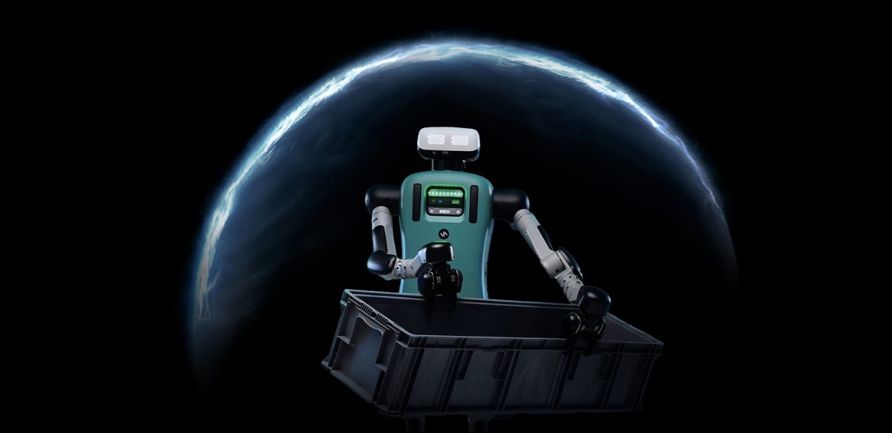

Cloud-only LLMs break on jurisdiction, logging, and control. DWS ships the NVIDIA stack on-site, with customer-owned hardware, bridged inference, and auditable handoff.
Cloud-only LLMs break on jurisdiction, logging, and control. DWS brings the NVIDIA stack on-site, with customer-owned hardware, bridged inference, and auditable handoff. One workflow first: crisis operations (VPK drone defense · dispatch coordination · NIS2 / CER incident handoff).
NVIDIA is the credibility layer — production silicon and models customers already trust. The actual moat is what surrounds the box: jurisdiction, ownership, bridged architecture, auditable handoff, and a Finnish service team. Common LLM vendors can copy model access. They cannot easily copy the jurisdiction, the install, the compliance trail, or the service wrapper.
OpenAI, Anthropic, Google Vertex, Mistral cloud — every cloud-only LLM hits the same four hard failures the moment the workload sits inside an EU-regulated industry:
| Failure mode | Why it kills the use case |
|---|---|
| CLOUD Act exposure | US-incorporated cloud means US law can compel access to your customer data. Defence, healthcare, dual-use, critical infrastructure: instant deal-breaker. |
| GDPR Article 5(f) & Schrems II | Customer data crossing to a third-country processor without an adequate lawful basis is automatic GDPR liability. |
| NIS2 — 24 h incident report | Critical entities (energy, water, transport, finance, health, digital, public admin) must report incidents in 24 h. You can't reconstruct what the model did when the logs live in someone else's cloud. |
| EU AI Act Article 12 logging | Required immutable record-keeping for high-risk AI. Cloud LLMs don't surface prompt / response / decision logs at the granularity an inspector demands. |
NVIDIA does the credibility work. Buying this stack is buying the same NVIDIA components NVIDIA itself ships — not a research project, not a custom-silicon bet, not vendor risk. Customers, inspectors, and procurement teams already trust the NVIDIA name. That's half the sales conversation gone before we walk in.
Itemised. No black box. Customer signs off on what arrived, what is installed, and what gets pushed each month.
| Item | What it is | When |
|---|---|---|
| NVIDIA hardware | Acer Veriton GN100 (or DGX Spark / Veriton 2000 / customer-supplied NVIDIA-capable) — pre-imaged, customer-owned | Day 0 |
| On-site install | Lifetime engineer: validates CUDA drivers, loads NVIDIA NIM bundle, brings up local MCP endpoint, sanity-tests first inference end-to-end | Day 0–1 |
| Operator training drill | 30-min scenario rehearsal with your team · signed install protocol · runbook handover | Day 1 |
| Article 12 immutable log | Live from minute one · 7-year retention · cryptographic hash chain · sealable for inspector handover | Day 1 |
| Monthly NVIDIA refresh | New Llama Nemotron NIMs, Cosmos checkpoints, Nemotron Speech, TensorRT-LLM kernels, GB10-tuned quantization | Monthly |
| Weekly security backports | CUDA driver patches, container CVE fixes, OpenSandbox + Ubuntu 24.04 LTS updates | Weekly |
| Daily hotfixes (when needed) | Zero-day CVE patches, NVIDIA driver hotfixes, model-side jailbreak mitigations — pushed within 24 h | As needed |
| 24/7 technical support | Named Finnish engineer · SLA sized to your operation · production incidents covered | Ongoing |
| Warranty servicing | We handle hardware warranty for you (Acer GN100 RMA paperwork, swap-out coordination, redeploy) | Ongoing |
| Remote configuration | Bundle switches, patches, OS updates over your secure tunnel — sovereign always | Ongoing |
You're not buying a sealed appliance. The GN100 ships with a full Ubuntu 24.04 LTS stack you own and extend. Cron jobs, systemd timers, Docker compose stacks, custom Python services, REST gateways — anything that runs on Linux runs here, alongside the NVIDIA model stack.
| Build capability | What customers actually do with it |
|---|---|
| Ubuntu 24.04 LTS — full Linux platform | Root access. Standard apt / systemd / cron / journald — everything your DevOps already knows. Pre-imaged but never sealed. |
| cron / systemd timer workflows | Schedule nightly ETL into the Article 12 log · 06:00 dispatch-readiness report · weekly Nemotron RAG re-index of your SOPs · monthly CSRD evidence bundle export. Workflow scheduling is built-in. |
| Docker / Docker Compose + OpenSandbox | Drop in your own containers next to the NVIDIA NIMs — internal microservices, custom ETL, in-house ML models. OpenSandbox keeps them isolated from each other and from the NIM stack. |
| Local MCP server | Wire Claude Code / your IDE / your dispatcher app to the box over your internal network. No internet hop. Customer-supplied MCP tools mount alongside ours. |
| Pre-installed toolchain | PyTorch, Jupyter, Ollama, vLLM, TensorRT-LLM, NVIDIA NIMs — ready out of the box. Bring your own libraries via apt / pip / conda. |
| Article 12 log API | HTTP API for read-only access to the immutable log. Wire it to your SIEM, your CSRD platform, your inspector portal. The log is yours; the API is documented. |
| REST / webhook gateway | Expose any agent or model as an internal HTTP endpoint for your ERP, dispatcher, ticketing system — sovereign, on-prem, no third-party API call. |
| Bring-your-own model | Drop a custom fine-tune (Llama / Mistral / Qwen variants) into the NVIDIA NIM runtime alongside the curated bundle. The box doesn't care whether the weights came from NVIDIA or you. |
| Air-gap switchable | Firewall policy can cut external network at any time. Update tunnel opens only when you allow it; otherwise the box runs fully offline for as long as you want. |
Six layers. Each is hard. The combination is harder. This is what the customer is really buying — and why a cloud LLM vendor can't compete on the same axis.
| Moat layer | Why it's hard to copy |
|---|---|
| EU-sovereign jurisdiction | Lifetime Oy is Finnish-registered (Y-tunnus 0772407-9), EU-based. A US or non-EU vendor cannot credibly sell "EU sovereign" to a defence ministry, a NIS2 operator, or a CER critical entity. Jurisdiction can't be cloned. |
| Customer-owned hardware | The customer owns the box. We don't host anything. CLOUD Act exposure and Schrems II concerns die in one move. A SaaS vendor can't replicate this without reinventing themselves as a hardware vendor — and most won't. |
| Bridged inference architecture | The GN100 ConnectX-7 bridge for 405 B-param models, TensorRT-LLM tensor parallel, and Article 12 log replication across nodes — that's months of engineering against a specific hardware topology. Cloud vendors don't optimise for "your customer's two-node cluster". |
| Auditable handoff | Signed install protocol + Article 12 cryptographic log + operator drill = inspector-friendly out of the box. Most AI vendors leave compliance evidence as the customer's homework. We make it the install deliverable. |
| Service wrapper depth | Operator training + 24/7 named-engineer support + warranty servicing + remote configuration — a Finnish team that answers the phone. Copy that without a Finnish team, an EU office, and a regulated-industry customer base. |
| Front-line feedback loop | VPK / industry-specific operator notes → next month's NVIDIA NIM bundle. Field experience in EU-regulated operations compounds month over month. New entrants start at month zero. |
The pattern repeats across every EU-regulated industry. Sovereign on-site NVIDIA stack + service wrapper. Different bundle per industry, same moat.
When the curious things in your sky aren't friendly. Whether you're a vapaapalokunta running a dual-use mutual-aid drill, a critical-infrastructure operator that needs to see, hear, and reason about everything at once, or a municipality preparing for a CER / NIS2 inspection — Situation Room gives you the bridged brainpower to do all of it from your own building.
Two line items make up the €10,093 turnkey price. The €995 NVIDIA model install is one fee for the bridged pair (not €995 per node). Both ship together; the install is also sold standalone if you're adding nodes to an existing fleet.
€7,998 (2× €3,999) · 2× NVIDIA GB10 Grace Blackwell SoC · 40 cores / 240 GiB unified memory combined · Ubuntu 24.04 LTS pre-imaged on both · direct node-to-node bridge link.
The hardware substrate — two NVIDIA-powered nodes joined into a single inference cluster. EU air-gapped, customer-owned, zero CLOUD Act exposure.
€995 · One fee covers the bridged pair · On-site engineer · CUDA + NVIDIA drivers validated on both nodes · NVIDIA NIM microservices + Cosmos checkpoints loaded · tensor parallel sharding configured · MCP endpoint live · Article 12 replica log started.
The service that turns two boxes into one situation room. Baked into the €10,093; also sold standalone at €995/device for fleet expansion.
With two bridged nodes you get the headroom for a wider, more specialised model set than a single Control Room. The Situation Room bundles typically include:
| Model | Role | Why it needs the bridge |
|---|---|---|
| Qwen 2.5 72B (full-precision shard) | Heavy reasoning — multi-actor situation analysis, regulatory cross-reference, decision recommendation. | Shards weights across both nodes for parallel inference instead of just quantizing. |
| Llama 3.1 70B Instruct | Second reasoning lane — used for A/B sanity checks and to run independent recommendations. | Lives on Node B while Qwen runs on Node A; both available simultaneously. |
| YOLOv8-x (vision) | Drone, vehicle, person detection across multiple camera feeds in real time. | Heavy vision model runs on Node A's GPU while reasoning runs on Node B. |
| BirdNET / acoustic event model | Drone & rotor acoustic signature detection (also: gunshot, glass break, engine ID). | Continuous audio stream needs its own pipeline — bridges to vision for confirmation. |
| Whisper-large-v3 (multi-lang) | Voice-to-text for radio chatter, Virve, command-channel transcription. | Real-time transcription competes with reasoning for compute; bridge isolates it. |
| TTS (Coqui / Piper) | Synthesized voice for outbound alerts and mass notifications in FI/SV/EN. | Low-latency response needs a dedicated node lane. |
| BGE-M3 embeddings + RAG | Local RAG over your SOPs, regulatory PDFs, response playbooks. | Always-warm index — bridged so it survives a single-node failure. |
Here's how Situation Room runs it without leaving the building:
One install fee covers the bridged pair. Choose at order time; switch bundles later (subscription required).
YOLOv8-x + acoustic event model + Qwen 72B sharded + Llama 70B independent + Whisper FI/SV + TTS + Virve gateway helpers. Built for the scenario above.
Qwen 72B sharded + Llama 70B + Whisper + TTS + multi-stream vision + map embeddings. Built for storm response, search-and-rescue, mass-casualty coordination.
Qwen 72B regulatory-tuned + Llama 70B + DocStruct + EUR-Lex retrieval + dual-use export-control reasoning + CER/NIS2 playbook RAG.
All of the above, plus customer-specific models scoped during onboarding (e.g. proprietary detection classes, internal regulation indexes, sectoral SOPs).
Situation Room runs end-to-end on NVIDIA across both nodes — with the inference cluster tuned for the bridged topology:
Lifetime Oy is a NVIDIA Inception applicant — sovereign EU edge AI, dual-use track. Partner enquiries: risto@onelifetime.world.
You pay €10,093 once for the bridged pair + install. Then €299/mo keeps NVIDIA's proprietary model stack rising on both nodes — without you changing the hardware.
| NVIDIA model / component shipped each month | Why your token economics rise on the bridged pair |
|---|---|
|
Llama Nemotron Ultra NIM Highest-accuracy agentic-reasoning NIM, designed for data-center-grade workloads — sharded across the bridge via TensorRT-LLM tensor parallel |
With the bridged pair (240 GB unified memory combined) you can actually run Nemotron Ultra locally. One node can't. This is the upgrade unlock the bridge buys you. |
|
Llama Nemotron Super + Nano NIMs Super on Node A (single-GPU high-accuracy), Nano on Node B (real-time low-latency) |
One brain for hard reasoning, one for fast triage. Both NVIDIA NIMs. Refreshed monthly. |
|
Cosmos world foundation models Cosmos Reason 2 (spatiotemporal VLM, leaderboard-topping chain-of-thought), Cosmos Predict 2.5 (future-state generation), Cosmos Transfer 2.5 (photorealistic physics simulation) |
Cosmos is built for physical AI. Drone trajectory prediction, occluded-target inference, multi-hour scenario simulation in the situation room. Cosmos 3 (unified gen + reasoning + action) lands here first when NVIDIA releases. |
|
Cosmos Nemotron VLMs & Nemotron Speech Vision-language NIMs for camera feeds · leaderboard ASR for Virve / radio / dispatch in FI/SV/EN |
The detection-to-decision pipeline runs entirely on NVIDIA NIMs. No cloud transcription, no cloud VLM call. |
|
NVIDIA Isaac ROS & CV-CUDA Multi-sensor calibration + fusion + accelerated vision pipelines for camera / LiDAR / acoustic feeds |
The multi-stream dual-use detection pipeline (4 camera feeds + acoustic + radio) — Isaac ROS fuses the lanes, CV-CUDA accelerates the kernels. End-to-end NVIDIA. |
|
NVIDIA Aerial Omniverse Digital-twin sync of the operational area for VPK familiarisation, dual-use scenario rehearsal, after-action review |
Your operators rehearse a scenario inside an Omniverse twin of the actual kalustohalli / response zone before they ever see it for real. |
|
TensorRT-LLM tensor-parallel kernels for GB10 Speculative decoding across the ConnectX-7 link, FP4/FP8 paths on Grace Blackwell, optimised attention for the bridged topology |
Tokens/sec across the cluster trend up every release — often 2–3× on a single jump when a new TensorRT-LLM kernel lands. |
|
Front-line dual-use feedback Drill notes, false-positive flags, operator overrides → next NVIDIA NIM bundle |
Your sovereign situation room adapts to your sky, your dispatch SOPs, your dual-use call patterns — faster than the threat adapts to you. |
This is also why the box ships once and the NVIDIA model subscription runs forever. Hardware depreciates. NVIDIA's NIM catalogue keeps growing. Token economics keep rising. The customer who renews compounds the gain.
| Cadence | What lands on the bridge | Why it's not optional |
|---|---|---|
| Monthly | New NIM versions on both nodes (Llama Nemotron Ultra/Super/Nano, Cosmos checkpoints, Nemotron Speech / RAG / Safety), new bundles, TensorRT-LLM tensor-parallel kernel refresh, quantization updates tuned for the GB10 pair | This is the rising-token-economics curve. Skip a month, your dual-use detection lane is a month slower than the threat. |
| Weekly | Security backports on both nodes (CUDA driver patches, container CVE fixes, OpenSandbox + Ubuntu LTS), minor model patches, bug fixes, bridge-config tweaks | CER / NIS2 / EU AI Act inspectors expect a documented patch cadence. Weekly = inspector-friendly. Two nodes = double the audit surface. |
| Daily hotfixes (when needed) | Zero-day CVE patches, NVIDIA driver hotfixes for critical issues, model-side jailbreak / prompt-injection fixes — pushed to both nodes simultaneously, no downtime via failover | When NVIDIA ships an emergency CUDA / driver fix, you can't wait for next month's release. We push within 24 h over your secure tunnel, with rollback ready. |
All updates ship over your secure tunnel to both nodes — sovereign always. Either node can survive a bad update; we roll one first, verify, then roll the second.
You don't get two boxes and a goodbye wave. Situation Room ships with full service bundled into the install + subscription — and a dual-use scenario rehearsal of your choice is part of the install drill:
| Service | What you get | Where it lives |
|---|---|---|
| Operator training | On-site drill at install with a real dual-use scenario (drone defense / storm response / search-and-rescue / your call). Quarterly remote refreshers. Runbook handover. Independent-check Llama lane explained so operators know when to trust which model. | Included in install (€995) |
| 24/7 technical support | Named Lifetime contact. Production incidents on either node get a Finnish engineer on the call. SLAs sized to your operation. | Sovereign Model Updates Subscription (€299/mo) |
| Warranty servicing | We handle warranty on both Acer Veriton GN100 nodes. Diagnostics, RMA, swap-out, redeploy — bridge restored without your operator touching a vendor queue. | Sovereign Model Updates Subscription (€299/mo) |
| Remote configuration | Bundle changes (e.g. swap to Crisis Coordination during a storm season), patches, OS updates pushed over your secure tunnel to both nodes. Always sovereign — nothing leaves the kalustohalli unless you decide so. | Sovereign Model Updates Subscription (€299/mo) |
If you cancel the subscription, both nodes still work — your data, your Article 12 log, your detections stay yours. You just stop getting LLM updates, support, warranty handling, and remote config. The relationship is opt-in, every month.
Verified against Acer's official launch (Oct 2025) and current 2026 stock. The ConnectX-7 bridge is the official Acer-supported link mode for running models up to 405 B parameters across a GN100 pair.
| Specification | Per node | Combined (bridge) |
|---|---|---|
| NVIDIA chip | NVIDIA GB10 Grace Blackwell Superchip · 5th-gen Tensor Cores · next-gen CUDA cores | 2× GB10 — TensorRT-LLM tensor-parallel sharding for Llama Nemotron Ultra |
| AI performance | 1 PFLOPS FP4 | ~2 PFLOPS FP4 across the bridge |
| CPU | 20-core Arm (10× Cortex-X925 @ 4 GHz + 10× Cortex-A725 @ 2.8 GHz) | 40 Arm cores total |
| Unified memory | 128 GB LPDDR5x · 273 GB/s | 256 GB LPDDR5x across the cluster — enough for Llama Nemotron Ultra + a second model alongside |
| Storage | Up to 4× 4 TB self-encrypting NVMe | Article 12 log replicated (active/standby) |
| Network bridge | NVIDIA ConnectX-7 NIC (200 Gbps) | Direct node-to-node link — Acer-supported, enables models up to 405 B parameters |
| Wireless | Wi-Fi 7 · Bluetooth 5.1 | (optional; usually disabled in NIS2 deployments) |
| I/O per node | 4× USB 3.2 Type-C · HDMI 2.1b · RJ-45 · Kensington lock | — |
| Form factor | 150 × 150 × 50.5 mm · < 1.5 kg | Both fit in a single half-rack shelf |
| OS / software | NVIDIA AI software stack preloaded; we re-image with Ubuntu 24.04 LTS + DWS IQ 6 at install | Single MCP endpoint exposed to clients · supports PyTorch, Jupyter, Ollama, vLLM, TensorRT-LLM out of the box |
| Failover | — | Either node can survive a hardware fault; lighter degraded mode keeps the situation room alive |
| Hardware price | €3,999 (Acer launch, EMEA) | €7,998 hardware (independent of our €1,495 install for the bridged pair) |
| Requirement | How Situation Room solves it |
|---|---|
| EU AI Act Article 12 | Immutable AI event log replicated on both nodes. 7-year retention. Sealable for inspector handover. |
| CER (Critical Entities Resilience) | Detection-to-decision audit trail for civil protection events. Documented response playbook RAG. |
| NIS2 | Network-segmented from corporate IT. Incident reporting logs stay on premise. |
| Dual-use export controls (Reg. 2021/821) | The product itself is general-purpose AI compute; dual-use bundle adds reasoning over current export-control lists. No prohibited items shipped. |
| CLOUD Act immunity | Hardware owned by customer in EU jurisdiction. US law cannot compel access. |
| KRITIS / civil defence use | Sovereign operation — sensitive detections never leave the building. |
Situation Room never receives raw sensor data — only ontologised, site-level summaries from each connected Control Room. Your administrator owns the retention schedule per ontology class and reviews access rights quarterly.
| Layer | Content | Default retention |
|---|---|---|
| Control Room feed (in) | Ontologised summaries only — no raw sensor stream, no unprocessed footage | Governed at the source Control Room (72h raw / 13mo summary) |
| Compliance audit trail | EU AI Act Article 12 log — hash-chained, immutable, replicated on both nodes | 7 years |
| Situation Room rollup | Multi-site executive summary — aggregate only, never individualised | 24 months, rolling window |
Full policy detail: Field Note — Tiedon vanheneminen.
The Situation Room is already a cluster. Scaling it up does not mean jumping to a data-centre AI factory — there are three rungs, and you climb only the one your workload needs. All three keep the box customer-owned, on-site, and CLOUD Act-immune.
| Rung | What you add | When to pick it |
|---|---|---|
| 1 · Add nodes to the bridge | A 3rd/4th GN100 node on the ConnectX-7 cluster — each GB10 adds +1 PFLOPS FP4 / +128 GB. Installed under the standalone NVIDIA Model Installation (per-device, sold for fleet expansion). | You need more inference headroom for the same kind of workload — more model lanes resident at once instead of quantizing. The default, cheapest step. |
| 2 · Heavier single node (safety-grade) | An IGX-class node with a discrete data-centre GPU, ECC memory, and functional-safety lineage. This is the rung NVIDIA Halos for Robotics targets — see below. | You need a big single-model footprint or, for the dual-use scenario, certifiable autonomous response. Industrial / medical / defence. |
| 3 · Train upstream, deploy down | Burst to a sovereign POD (DGX-class today, Vera Rubin-class tomorrow) — in an EU-sovereign data centre, never in the room. Train/fine-tune there; deploy the result back onto the room nodes. That upstream is now real: NVIDIA's June 2026 build-out put 35 AI supercomputers across 23 European countries, anchored by EuroHPC AI Factories (Barcelona's MareNostrum 5 on GB300 NVL72 + GB200 NVL4) — the EU-sovereign training tier, on EU soil. | The real need is training at scale, not serving. The AI-factory tier — kept upstream so the room stays a sovereign edge box. |
Rung 3 is the only place a POD-scale platform fits — upstream, in a facility, for the training half. It is never “one per room.” Practical node count beyond ~4 on the bridge is confirmed case-by-case: risto@onelifetime.world.
For the dual-use drone-defense build, the question is rarely more teraflops — it is certifiable autonomous response. NVIDIA Halos for Robotics (announced 22 Jun 2026) is the safety architecture that answers it, and it layers on top of the edge node without leaving the room.
Halos is NVIDIA's full-stack, open robotics safety system, extending its autonomous-vehicle safety foundation to physical AI. It does not add a compute rung — it makes the autonomous half of Rung 2 trustworthy and certifiable.

| Halos layer | What it is | Why the Situation Room cares |
|---|---|---|
| Compute + sensors | NVIDIA IGX Thor + Holoscan Sensor Bridge — industrial-grade AI compute with built-in safety and real-time sensor connectivity. | The safety-certified successor to the IGX node in Rung 2 — same in-room, customer-owned model. |
| Halos OS | Halos Core (safety-related operating functions) + the open-source Halos Outside-In Safety Blueprint — external cameras and AI agents that dynamically control machine behaviour. | Outside-In is the drone-defense pattern: external sensors → reasoning → controlled, bounded autonomous response. |
| Inspection Lab | The Halos AI Systems Inspection Lab — the first ANAB-accredited program for functional and AI safety for physical AI, recognised by TÜV Rheinland, TÜV SÜD, UL Solutions, exida, SGS and CertX. | A real third-party certification path against IEC 61508, ISO 13849, ISO 26262 and ISO/IEC TR 5469 — what CER / NIS2 / dual-use buyers actually gate on. |
Honest status: Halos Core for IGX is in early access (Linux, and Linux + QNX OS for Safety 8.0); the Outside-In Safety Blueprint is open-source early access. We track it as a roadmap layer for the dual-use build, not a shipping line item today — we will not bill for a certification that is not yet issued.
Hardware sourced and configured by Lifetime Oy. Delivery lead time: 3–5 weeks within EU. Need just one node? See the Control Room (1× GN100). Adding more nodes to an existing fleet? See NVIDIA Model Installation. Volume pricing for 3+ nodes: risto@onelifetime.world.